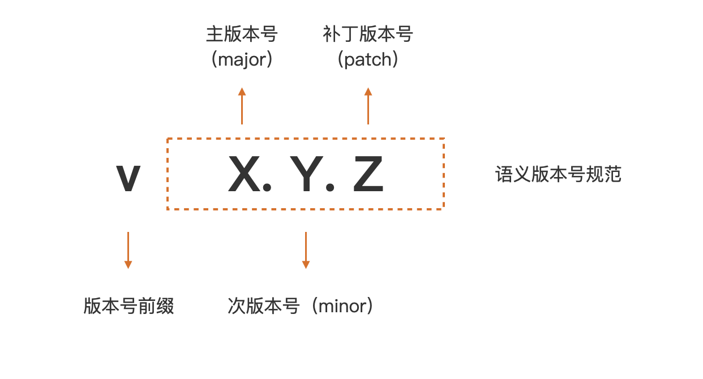
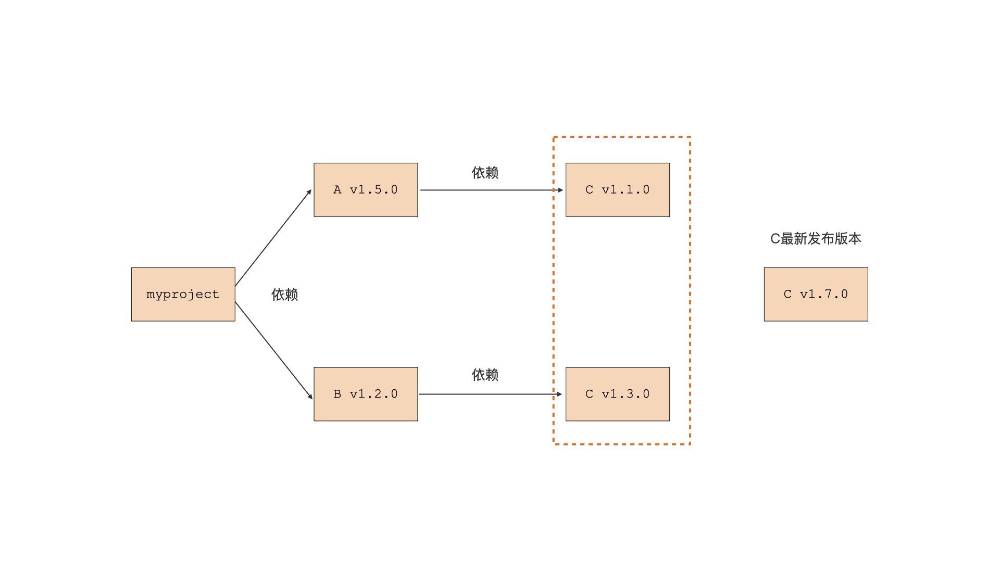
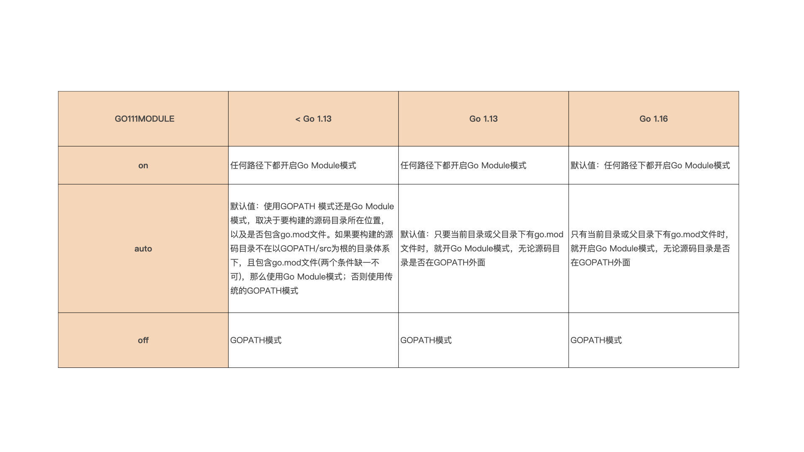

- 00 开篇词 这样入门Go，才能少走弯路.md.html
- 01 前世今生：你不得不了解的Go的历史和现状.md.html
- 02 拒绝“Hello and Bye”：Go语言的设计哲学是怎么一回事？.md.html
- 03 配好环境：选择一种最适合你的Go安装方法.md.html
- 04 初窥门径：一个Go程序的结构是怎样的？.md.html
- 05 标准先行：Go项目的布局标准是什么？.md.html
- 06 构建模式：Go是怎么解决包依赖管理问题的？.md.html
- 07 构建模式：Go Module的6类常规操作.md.html
- 08 入口函数与包初始化：搞清Go程序的执行次序.md.html
- 09 即学即练：构建一个Web服务就是这么简单.md.html
- 10 变量声明：静态语言有别于动态语言的重要特征.md.html
- 11 代码块与作用域：如何保证变量不会被遮蔽？.md.html
- 12 基本数据类型：Go原生支持的数值类型有哪些？.md.html
- 13 基本数据类型：为什么Go要原生支持字符串类型？.md.html
- 14 常量：Go在“常量”设计上的创新有哪些？.md.html
- 15 同构复合类型：从定长数组到变长切片.md.html
- 16 复合数据类型：原生map类型的实现机制是怎样的？.md.html
- 17 复合数据类型：用结构体建立对真实世界的抽象.md.html
- 18 控制结构：if的“快乐路径”原则.md.html
- 19 控制结构：Go的for循环，仅此一种.md.html
- 20 控制结构：Go中的switch语句有哪些变化？.md.html
- 21 函数：请叫我“一等公民”.md.html
- 22 函数：怎么结合多返回值进行错误处理？.md.html
- 23 函数：怎么让函数更简洁健壮？.md.html
- 24 方法：理解“方法”的本质.md.html
- 25 方法：方法集合与如何选择receiver类型？.md.html
- 26 方法：如何用类型嵌入模拟实现“继承”？.md.html
- 27 即学即练：跟踪函数调用链，理解代码更直观.md.html
- 28 接口：接口即契约.md.html
- 29 接口：为什么nil接口不等于nil？.md.html
- 30 接口：Go中最强大的魔法.md.html
- 31 并发：Go的并发方案实现方案是怎样的？.md.html
- 32 并发：聊聊Goroutine调度器的原理.md.html
- 33 并发：小channel中蕴含大智慧.md.html
- 34 并发：如何使用共享变量？.md.html
- 35 即学即练：如何实现一个轻量级线程池？.md.html
- 36 打稳根基：怎么实现一个TCP服务器？（上）.md.html
- 37 代码操练：怎么实现一个TCP服务器？（中）.md.html
- 38 成果优化：怎么实现一个TCP服务器？（下）.md.html
- 39 驯服泛型：了解类型参数.md.html
- 40 驯服泛型：定义泛型约束.md.html
- 41 驯服泛型：明确使用时机.md.html
- 元旦快乐 这是一份暂时停更的声明.md.html
- 加餐 作为Go Module的作者，你应该知道的几件事.md.html
- 加餐 如何拉取私有的Go Module？.md.html
- 加餐 我“私藏”的那些优质且权威的Go语言学习资料.md.html
- 加餐 聊聊Go 1.17版本的那些新特性.md.html
- 加餐 聊聊Go语言的指针.md.html
- 加餐 聊聊最近大热的Go泛型.md.html
- 大咖助阵 叶剑峰：Go语言中常用的那些代码优化点.md.html
- 大咖助阵 大明：Go泛型，泛了，但没有完全泛.md.html
- 大咖助阵 孔令飞：从小白到“老鸟”，我的Go语言进阶之路.md.html
- 大咖助阵 徐祥曦：从销售到分布式存储工程师，我与 Go 的故事.md.html
- 大咖助阵 曹春晖：聊聊 Go 语言的 GC 实现.md.html
- 大咖助阵 海纳：聊聊语言中的类型系统与泛型.md.html
- 期中测试 一起检验下你的学习成果吧.md.html
- 用户故事 罗杰：我的Go语言学习之路.md.html
- 结束语 和你一起迎接Go的黄金十年.md.html
- 结课测试 快来检验下你的学习成果吧！.md.html
- 捐赠
06 构建模式：Go是怎么解决包依赖管理问题的？
你好，我是Tony Bai。
通过前面的讲解，我们已经初步了解了Go程序的结构，以及Go项目的典型布局了。那么，接下来，我们是时候来系统学习一下Go应用的构建了，它们都是我们继续Go语言学习的前提。
所以在这一节课，我们就来了解Go构建模式演化的前世今生。理解了这个发展史后，我们会重点来探讨现在被广泛采用的构建模式，Go Module的基本概念和应用构建方式。 接着，知道了怎么做后，我们会再深一层，继续分析Go Module的工作原理。这样层层深入地分析完后，你就能彻底、透彻地掌握Go Module构建模式了。
好了，我们直接开始吧。我们先来了解一下Go构建模式的演化过程，弄清楚Go核心开发团队为什么要引入Go module构建模式。
Go构建模式是怎么演化的？
Go程序由Go包组合而成的，Go程序的构建过程就是确定包版本、编译包以及将编译后得到的目标文件链接在一起的过程。
Go语言的构建模式历经了三个迭代和演化过程，分别是最初期的GOPATH、1.5版本的Vendor机制，以及现在的Go Module。这里我们就先来介绍一下前面这两个。
首先我们来看GOPATH。
Go语言在首次开源时，就内置了一种名为GOPATH的构建模式。在这种构建模式下，Go编译器可以在本地GOPATH环境变量配置的路径下，搜寻Go程序依赖的第三方包。如果存在，就使用这个本地包进行编译；如果不存在，就会报编译错误。
我这里给出了一段在GOPATH构建模式下编写的代码，你先来感受一下：
package main
import "github.com/sirupsen/logrus"
func main() {
logrus.Println("hello, gopath mode")
}
你可以看到，这段代码依赖了第三方包logrus（logrus是Go社区使用最为广泛的第三方log包）。
接下来，这个构建过程演示了Go编译器（这里使用Go 1.10.8）在GOPATH环境变量所配置的目录下（这里为/Users/tonybai/Go），无法找到程序依赖的logrus包而报错的情况：
$go build main.go
main.go:3:8: cannot find package "github.com/sirupsen/logrus" in any of:
/Users/tonybai/.bin/go1.10.8/src/github.com/sirupsen/logrus (from $GOROOT)
/Users/tonybai/Go/src/github.com/sirupsen/logrus (from $GOPATH)
那么Go编译器在GOPATH构建模式下，究竟怎么在GOPATH配置的路径下搜寻第三方依赖包呢？
为了给你说清楚搜寻规则，我们先假定Go程序导入了github.com/user/repo这个包，我们也同时假定当前GOPATH环境变量配置的值为：
export GOPATH=/usr/local/goprojects:/home/tonybai/go
那么在GOPATH构建模式下，Go编译器在编译Go程序时，就会在下面两个路径下搜索第三方依赖包是否存在：
/usr/local/goprojects/src/github.com/user/repo
/home/tonybai/go/src/github.com/user/repo
这里注意一下，如果你没有显式设置GOPATH环境变量，Go会将GOPATH设置为默认值，不同操作系统下默认值的路径不同，在macOS或Linux上，它的默认值是$HOME/go。
那么，当遇到像上面例子一样，没有在本地找到程序的第三方依赖包的情况，我们该如何解决这个问题呢？
这个时候就要让go get登场了！
我们可以通过go get命令将本地缺失的第三方依赖包下载到本地，比如：
$go get github.com/sirupsen/logrus
这里的go get命令，不仅能将logrus包下载到GOPATH环境变量配置的目录下，它还会检查logrus的依赖包在本地是否存在，如果不存在，go get也会一并将它们下载到本地。
不过，go get下载的包只是那个时刻各个依赖包的最新主线版本，这样会给后续Go程序的构建带来一些问题。比如，依赖包持续演进，可能会导致不同开发者在不同时间获取和编译同一个Go包时，得到不同的结果，也就是不能保证可重现的构建（Reproduceable Build）。又比如，如果依赖包引入了不兼容代码，程序将无法通过编译。
最后还有一点，如果依赖包因引入新代码而无法正常通过编译，并且该依赖包的作者又没用及时修复这个问题，这种错误也会传导到你的程序，导致你的程序无法通过编译。
也就是说，在GOPATH构建模式下，Go编译器实质上并没有关注Go项目所依赖的第三方包的版本。但Go开发者希望自己的Go项目所依赖的第三方包版本能受到自己的控制，而不是随意变化。于是Go核心开发团队引入了Vendor机制试图解决上面的问题。
现在我们就来看看vendor机制是怎么解决这个问题的。
Go在1.5版本中引入vendor机制。vendor机制本质上就是在Go项目的某个特定目录下，将项目的所有依赖包缓存起来，这个特定目录名就是vendor。
Go编译器会优先感知和使用vendor目录下缓存的第三方包版本，而不是GOPATH环境变量所配置的路径下的第三方包版本。这样，无论第三方依赖包自己如何变化，无论GOPATH环境变量所配置的路径下的第三方包是否存在、版本是什么，都不会影响到Go程序的构建。
如果你将vendor目录和项目源码一样提交到代码仓库，那么其他开发者下载你的项目后，就可以实现可重现的构建。因此，如果使用vendor机制管理第三方依赖包，最佳实践就是将vendor一并提交到代码仓库中。
下面这个目录结构就是为上面的代码示例添加vendor目录后的结果：
.
├── main.go
└── vendor/
├── github.com/
│ └── sirupsen/
│ └── logrus/
└── golang.org/
└── x/
└── sys/
└── unix/
在添加完vendor后，我们重新编译main.go，这个时候Go编译器就会在vendor目录下搜索程序依赖的logrus包以及后者依赖的golang.org/x/sys/unix包了。
这里你还要注意一点，要想开启vendor机制，你的Go项目必须位于GOPATH环境变量配置的某个路径的src目录下面。如果不满足这一路径要求，那么Go编译器是不会理会Go项目目录下的vendor目录的。
不过vendor机制虽然一定程度解决了Go程序可重现构建的问题，但对开发者来说，它的体验却不那么好。一方面，Go项目必须放在GOPATH环境变量配置的路径下，庞大的vendor目录需要提交到代码仓库，不仅占用代码仓库空间，减慢仓库下载和更新的速度，而且还会干扰代码评审，对实施代码统计等开发者效能工具也有比较大影响。
另外，你还需要手工管理vendor下面的Go依赖包，包括项目依赖包的分析、版本的记录、依赖包获取和存放，等等，最让开发者头疼的就是这一点。
为了解决这个问题，Go核心团队与社区将Go构建的重点转移到如何解决包依赖管理上。Go社区先后开发了诸如gb、glide、dep等工具，来帮助Go开发者对vendor下的第三方包进行自动依赖分析和管理，但这些工具也都有自身的问题。
就在Go社区为包依赖管理焦虑并抱怨没有官方工具的时候，Go核心团队基于社区实践的经验和教训，推出了Go官方的解决方案：Go Module。
创建你的第一个Go Module
从Go 1.11版本开始，除了GOPATH构建模式外，Go又增加了一种Go Module构建模式。
在04讲中，我们曾基于Go Module构建模式编写过一个“hello, world”程序，当时是为了讲解Go程序结构，这里我再带你回顾一下Go Module的基础概念。
一个Go Module是一个Go包的集合。module是有版本的，所以module下的包也就有了版本属性。这个module与这些包会组成一个独立的版本单元，它们一起打版本、发布和分发。
在Go Module模式下，通常一个代码仓库对应一个Go Module。一个Go Module的顶层目录下会放置一个go.mod文件，每个go.mod文件会定义唯一一个module，也就是说Go Module与go.mod是一一对应的。
go.mod文件所在的顶层目录也被称为module的根目录，module根目录以及它子目录下的所有Go包均归属于这个Go Module，这个module也被称为main module。
你可能也意识到了，Go Module的原理和使用方法其实有点复杂，但“千里之行始于足下”，下面我们先从如何创建一个Go Module说起。我们先来将上面的例子改造成为一个基于Go Module构建模式的Go项目。
创建一个Go Module
将基于当前项目创建一个Go Module，通常有如下几个步骤：
第一步，通过go mod init创建go.mod文件，将当前项目变为一个Go Module；
第二步，通过go mod tidy命令自动更新当前module的依赖信息；
第三步，执行go build，执行新module的构建。
我们一步一步来详细看一下。
我们先建立一个新项目module-mode用来演示Go Module的创建，注意我们可以在任意路径下创建这个项目，不必非要在GOPATH环境变量的配置路径下。
这个项目的main.go修改自上面的例子，修改后的main.go的代码是这样的，我们依旧依赖外部包logrus：
package main
import "github.com/sirupsen/logrus"
func main() {
logrus.Println("hello, go module mode")
}
你可以看到，这个项目目录下只有main.go一个源文件，现在我们就来为这个项目添加Go Module支持。我们通过go mod init命令为这个项目创建一个Go Module（这里我们使用的是Go版本为1.16.5，Go 1.16版本默认采用Go Module构建模式）：
$go mod init github.com/bigwhite/module-mode
go: creating new go.mod: module github.com/bigwhite/module-mode
go: to add module requirements and sums:
go mod tidy
现在，go mod init在当前项目目录下创建了一个go.mod文件，这个go.mod文件将当前项目变为了一个Go Module，项目根目录变成了module根目录。go.mod的内容是这样的：
module github.com/bigwhite/module-mode
go 1.16
这个go.mod文件现在处于初始状态，它的第一行内容用于声明module路径(module path)，最后一行是一个Go版本指示符，用于表示这个module是在某个特定的Go版本的module语义的基础上编写的。
go mod init命令还输出了两行日志，提示我们可以使用go mod tidy命令，添加module依赖以及校验和。go mod tidy命令会扫描Go源码，并自动找出项目依赖的外部Go Module以及版本，下载这些依赖并更新本地的go.mod文件。我们按照这个提示执行一下go mod tidy命令：
$go mod tidy
go: finding module for package github.com/sirupsen/logrus
go: downloading github.com/sirupsen/logrus v1.8.1
go: found github.com/sirupsen/logrus in github.com/sirupsen/logrus v1.8.1
go: downloading golang.org/x/sys v0.0.0-20191026070338-33540a1f6037
go: downloading github.com/stretchr/testify v1.2.2
我们看到，对于一个处于初始状态的module而言，go mod tidy分析了当前main module的所有源文件，找出了当前main module的所有第三方依赖，确定第三方依赖的版本，还下载了当前main module的直接依赖包（比如logrus），以及相关间接依赖包（直接依赖包的依赖，比如上面的golang.org/x/sys等）。
Go Module还支持通过Go Module代理服务加速第三方依赖的下载。在03讲我们讲解Go环境安装时，就提到过GOPROXY环境变量，这个环境变量的默认值为“https: // proxy.golang.org,direct”，不过我们可以配置更适合于中国大陆地区的Go Module代理服务。
由go mod tidy下载的依赖module会被放置在本地的module缓存路径下，默认值为$GOPATH[0]/pkg/mod，Go 1.15及以后版本可以通过GOMODCACHE环境变量，自定义本地module的缓存路径。
执行go mod tidy后，我们示例go.mod的内容更新如下：
module github.com/bigwhite/module-mode
go 1.16
require github.com/sirupsen/logrus v1.8.1
你可以看到，当前module的直接依赖logrus，还有它的版本信息都被写到了go.mod文件的require段中。
而且，执行完go mod tidy后，当前项目除了go.mod文件外，还多了一个新文件go.sum，内容是这样的：
github.com/davecgh/go-spew v1.1.1 h1:vj9j/u1bqnvCEfJOwUhtlOARqs3+rkHYY13jYWTU97c=
github.com/davecgh/go-spew v1.1.1/go.mod h1:J7Y8YcW2NihsgmVo/mv3lAwl/skON4iLHjSsI+c5H38=
github.com/pmezard/go-difflib v1.0.0 h1:4DBwDE0NGyQoBHbLQYPwSUPoCMWR5BEzIk/f1lZbAQM=
github.com/pmezard/go-difflib v1.0.0/go.mod h1:iKH77koFhYxTK1pcRnkKkqfTogsbg7gZNVY4sRDYZ/4=
github.com/sirupsen/logrus v1.8.1 h1:dJKuHgqk1NNQlqoA6BTlM1Wf9DOH3NBjQyu0h9+AZZE=
github.com/sirupsen/logrus v1.8.1/go.mod h1:yWOB1SBYBC5VeMP7gHvWumXLIWorT60ONWic61uBYv0=
github.com/stretchr/testify v1.2.2 h1:bSDNvY7ZPG5RlJ8otE/7V6gMiyenm9RtJ7IUVIAoJ1w=
github.com/stretchr/testify v1.2.2/go.mod h1:a8OnRcib4nhh0OaRAV+Yts87kKdq0PP7pXfy6kDkUVs=
golang.org/x/sys v0.0.0-20191026070338-33540a1f6037 h1:YyJpGZS1sBuBCzLAR1VEpK193GlqGZbnPFnPV/5Rsb4=
golang.org/x/sys v0.0.0-20191026070338-33540a1f6037/go.mod h1:h1NjWce9XRLGQEsW7wpKNCjG9DtNlClVuFLEZdDNbEs=
这同样是由go mod相关命令维护的一个文件，它存放了特定版本module内容的哈希值。
这是Go Module的一个安全措施。当将来这里的某个module的特定版本被再次下载的时候，go命令会使用go.sum文件中对应的哈希值，和新下载的内容的哈希值进行比对，只有哈希值比对一致才是合法的，这样可以确保你的项目所依赖的module内容，不会被恶意或意外篡改。因此，我推荐你把go.mod和go.sum两个文件与源码，一并提交到代码版本控制服务器上。
现在，go mod init和go mod tidy已经为我们当前Go Module的构建铺平了道路，接下来，我们只需在当前module的根路径下，执行go build就可以完成module的构建了！
go build命令会读取go.mod中的依赖及版本信息，并在本地module缓存路径下找到对应版本的依赖module，执行编译和链接。如果顺利的话，我们会在当前目录下看到一个新生成的可执行文件module-mode，执行这个文件我们就能得到正确结果了。
整个过程的执行步骤是这样的：
$go build
$$ls
go.mod go.sum main.go module-mode*
$./module-mode
INFO[0000] hello, go module mode
好了，到这里，我们已经完成了一个有着多个第三方依赖的项目的构建了。但关于Go Module的操作还远不止这些。随着Go项目的演进，我们会在代码中导入新的第三方包，删除一些旧的依赖包，更新一些依赖包的版本等。关于这些内容，我会在下一节课再给你详细讲解。
那么，在看到我们的Go Module机制会自动分析项目的依赖包，并选出最适合的版本后，不知道你会不会有这样的疑惑：项目所依赖的包有很多版本，Go Module是如何选出最适合的那个版本的呢？要想回答这个问题，我们就需要深入到Go Module构建模式的工作原理中去。
深入Go Module构建模式
Go语言设计者在设计Go Module构建模式，来解决“包依赖管理”的问题时，进行了几项创新，这其中就包括语义导入版本(Semantic Import Versioning)，以及和其他主流语言不同的最小版本选择(Minimal Version Selection)等机制。只要你深入理解了这些机制，你就能真正掌握Go Module构建模式。
首先我们看一下Go Module的语义导入版本机制。
在上面的例子中，我们看到go.mod的require段中依赖的版本号，都符合vX.Y.Z的格式。在Go Module构建模式下，一个符合Go Module要求的版本号，由前缀v和一个满足语义版本规范的版本号组成。
你可以看看下面这张图，语义版本号分成3部分：主版本号(major)、次版本号(minor)和补丁版本号(patch)。例如上面的logrus module的版本号是v1.8.1，这就表示它的主版本号为1，次版本号为8，补丁版本号为1。

Go命令和go.mod文件都使用上面这种符合语义版本规范的版本号，作为描述Go Module版本的标准形式。借助于语义版本规范，Go命令可以确定同一module的两个版本发布的先后次序，而且可以确定它们是否兼容。
按照语义版本规范，主版本号不同的两个版本是相互不兼容的。而且，在主版本号相同的情况下，次版本号大都是向后兼容次版本号小的版本。补丁版本号也不影响兼容性。
而且，Go Module规定：如果同一个包的新旧版本是兼容的，那么它们的包导入路径应该是相同的。怎么理解呢？我们来举个简单示例。我们就以logrus为例，它有很多发布版本，我们从中选出两个版本v1.7.0和v1.8.1.。按照上面的语义版本规则，这两个版本的主版本号相同，新版本v1.8.1是兼容老版本v1.7.0的。那么，我们就可以知道，如果一个项目依赖logrus，无论它使用的是v1.7.0版本还是v1.8.1版本，它都可以使用下面的包导入语句导入logrus包：
import "github.com/sirupsen/logrus"
那么问题又来了，假如在未来的某一天，logrus的作者发布了logrus v2.0.0版本。那么根据语义版本规则，该版本的主版本号为2，已经与v1.7.0、v1.8.1的主版本号不同了，那么v2.0.0与v1.7.0、v1.8.1就是不兼容的包版本。然后我们再按照Go Module的规定，如果一个项目依赖logrus v2.0.0版本，那么它的包导入路径就不能再与上面的导入方式相同了。那我们应该使用什么方式导入logrus v2.0.0版本呢？
Go Module创新性地给出了一个方法：将包主版本号引入到包导入路径中，我们可以像下面这样导入logrus v2.0.0版本依赖包：
import "github.com/sirupsen/logrus/v2"
这就是Go的“语义导入版本”机制，也就是说通过在包导入路径中引入主版本号的方式，来区别同一个包的不兼容版本，这样一来我们甚至可以同时依赖一个包的两个不兼容版本：
import (
"github.com/sirupsen/logrus"
logv2 "github.com/sirupsen/logrus/v2"
)
不过到这里，你可能会问，v0.y.z版本应该使用哪种导入路径呢？
按照语义版本规范的说法，v0.y.z这样的版本号是用于项目初始开发阶段的版本号。在这个阶段任何事情都有可能发生，其API也不应该被认为是稳定的。Go Module将这样的版本(v0)与主版本号v1做同等对待，也就是采用不带主版本号的包导入路径，这样一定程度降低了Go开发人员使用这样版本号包时的心智负担。
Go语义导入版本机制是Go Module机制的基础规则，同样它也是Go Module其他规则的基础。
接下来，我们再来看一下Go Module的最小版本选择原则。
在前面的例子中，Go命令都是在项目初始状态分析项目的依赖，并且项目中两个依赖包之间没有共同的依赖，这样的包依赖关系解决起来还是比较容易的。但依赖关系一旦复杂起来，比如像下图中展示的这样，Go又是如何确定使用依赖包C的哪个版本的呢？- - 在这张图中，myproject有两个直接依赖A和B，A和B有一个共同的依赖包C，但A依赖C的v1.1.0版本，而B依赖的是C的v1.3.0版本，并且此时C包的最新发布版为C v1.7.0。这个时候，Go命令是如何为myproject选出间接依赖包C的版本呢？选出的究竟是v1.7.0、v1.1.0还是v1.3.0呢？你可以暂停一两分钟思考一下。
其实，当前存在的主流编程语言，以及Go Module出现之前的很多Go包依赖管理工具都会选择依赖项的“最新最大(Latest Greatest)版本”，对应到图中的例子，这个版本就是v1.7.0。
当然了，理想状态下，如果语义版本控制被正确应用，并且这种“社会契约”也得到了很好的遵守，那么这种选择算法是有道理的，而且也可以正常工作。在这样的情况下，依赖项的“最新最大版本”应该是最稳定和安全的版本，并且应该有向后兼容性。至少在相同的主版本(Major Verion)依赖树中是这样的。
但我们这个问题的答案并不是这样的。Go设计者另辟蹊径，在诸多兼容性版本间，他们不光要考虑最新最大的稳定与安全，还要尊重各个module的述求：A明明说只要求C v1.1.0，B明明说只要求C v1.3.0。所以Go会在该项目依赖项的所有版本中，选出符合项目整体要求的“最小版本”。
这个例子中，C v1.3.0是符合项目整体要求的版本集合中的版本最小的那个，于是Go命令选择了C v1.3.0，而不是最新最大的C v1.7.0。并且，Go团队认为“最小版本选择”为Go程序实现持久的和可重现的构建提供了最佳的方案。
了解了语义导入版本与最小版本选择两种机制后，你就可以说你已经掌握了Go Module的精髓。
但很多Go开发人员的起点，并非是默认开启Go Module构建模式的Go 1.16版本，多数Go开发人使用的环境中都存在着多套Go版本，有用于体验最新功能特性的Go版本，也有某些遗留项目所使用的老版本Go编译器。
它们工作时采用的构建模式是不一样的，并且即便是引入Go Module的Go 1.11版本，它的Go Module机制，和后续进化后的Go版本的Go Module构建机制在表现行为上也有所不同。因此Go开发人员可能需要经常在各个Go版本间切换。而明确具体版本下Go Module的实际表现行为对Go开发人员是十分必要的。
Go各版本构建模式机制和切换
我们前面说了，在Go 1.11版本中，Go开发团队引入Go Modules构建模式。这个时候，GOPATH构建模式与Go Modules构建模式各自独立工作，我们可以通过设置环境变量GO111MODULE的值在两种构建模式间切换。
然后，随着Go语言的逐步演进，从Go 1.11到Go 1.16版本，不同的Go版本在GO111MODULE为不同值的情况下，开启的构建模式几经变化，直到Go 1.16版本，Go Module构建模式成为了默认模式。
所以，要分析Go各版本的具体构建模式的机制和切换，我们只需要找到这几个代表性的版本就好了。
我这里将Go 1.13版本之前、Go 1.13版本以及Go 1.16版本，在GO111MODULE为不同值的情况下的行为做了一下对比，这样我们可以更好地理解不同版本下、不同构建模式下的行为特性，下面我们就来用表格形式做一下比对：

了解了这些，你就能在工作中游刃有余的在各个Go版本间切换了，不用再担心切换后模式变化，导致构建失败了。
小结
好了，今天的课讲到这里就结束了，现在我们一起来回顾一下吧。
在这一讲中，我们初步了解了Go语言构建模式的演化历史。
Go语言最初发布时内置的构建模式为GOPATH构建模式。在这种构建模式下，所有构建都离不开GOPATH环境变量。在这个模式下，Go编译器并没有关注依赖包的版本，开发者也无法控制第三方依赖的版本，导致开发者无法实现可重现的构建。
那么，为了支持可重现构建，Go 1.5版本引入了vendor机制，开发者可以在项目目录下缓存项目的所有依赖，实现可重现构建。但vendor机制依旧不够完善，开发者还需要手工管理vendor下的依赖包，这就给开发者带来了不小的心智负担。
后来，Go 1.11版本中，Go核心团队推出了新一代构建模式：Go Module以及一系列创新机制，包括语义导入版本机制、最小版本选择机制等。语义导入版本机制是Go Moudle其他机制的基础，它是通过在包导入路径中引入主版本号的方式，来区别同一个包的不兼容版本。而且，Go命令使用最小版本选择机制进行包依赖版本选择，这和当前主流编程语言，以及Go社区之前的包依赖管理工具使用的算法都有点不同。
此外，Go命令还可以通过GO111MODULE环境变量进行Go构建模式的切换。但你要注意，从Go 1.11到Go 1.16，不同的Go版本在GO111MODULE为不同值的情况下，开启的构建模式以及具体表现行为也几经变化，这里你重点看一下前面总结的表格。
现在，Go核心团队已经考虑在后续版本中彻底移除GOPATH构建模式，Go Module构建模式将成为Go语言唯一的标准构建模式。所以，学完这一课之后，我建议你从现在开始就彻底抛弃GOPATH构建模式，全面使用Go Module构建模式。
思考题
今天我们的思考题是：如何将基于GOPATH构建模式的现有项目迁移为使用Go Module构建模式？欢迎在留言区和我分享你的答案。
感谢你和我一起学习，也欢迎你把这节课分享给更多对Go构建模式感兴趣的朋友。我是Tony Bai，我们下节课见。
© 2019 - 2023 Liangliang Lee. Powered by gin and hexo-theme-book.